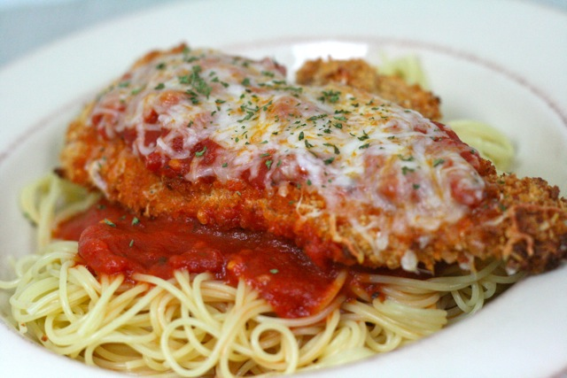

Commodore Recipes

Description
Hey fellow cooking beginners! I just made the most amazing Chicken Parmesan and wanted to share the recipe with you all. It's super simple and perfect for those who are just starting out in the kitchen. Here's what you'll need:
Ingredients
- 2 boneless, skinless chicken breasts
- 1 cup breadcrumbs
- 1/2 cup grated Parmesan cheese
- 1 teaspoon dried basil
- 1 teaspoon dried oregano
- 1/2 teaspoon garlic powder
- 1/2 teaspoon salt
- 1/4 teaspoon black pepper
- 1 cup marinara sauce
- 1 cup shredded mozzarella cheese
- Fresh basil leaves for garnish (optional)
Directions
- Preheat your oven to 400°F (200°C) and line a baking sheet with foil.
- In a shallow bowl, mix together the breadcrumbs, grated Parmesan cheese, dried basil, dried oregano, garlic powder, salt, and black pepper.
- Dip each chicken breast into the breadcrumb mixture, coating both sides evenly.
- Place the coated chicken breasts on the prepared baking sheet and bake for 20 minutes or until the chicken is cooked through and the breadcrumbs are golden brown.
- Remove the baking sheet from the oven and spoon marinara sauce over each chicken breast.
- Sprinkle shredded mozzarella cheese on top of the sauce.
- Return the baking sheet to the oven and bake for an additional 5 minutes or until the cheese is melted and bubbly.
- Remove from the oven and let the chicken rest for a few minutes before serving.
- Garnish with fresh basil leaves, if desired.
- Enjoy your homemade Chicken Parmesan with a side of pasta or a fresh salad.